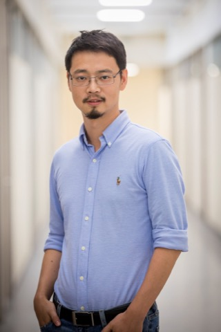
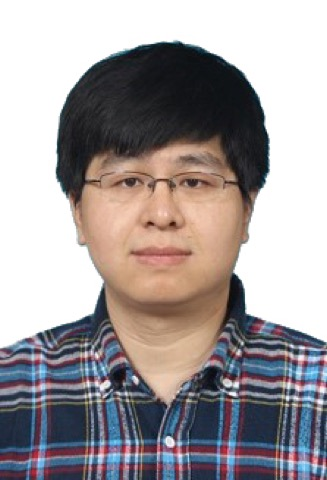
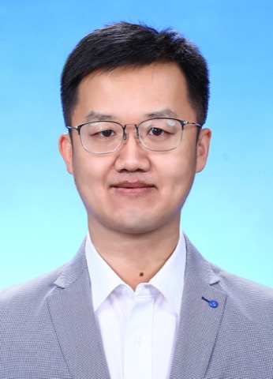

CAS Academician / Xi'an Jiaotong & Tsinghua
Systems engineer, IEEE Fellow. Dean of Electronic and Information Engineering at XJTU; Chief Scientist of the MoE Key Lab of Intelligent Networks and Network Security.
Hebei Provincial Key Laboratory · Discipline Category
Key Laboratory of Real-virtual Integrated Autonomous Systems（RIAS）
Serving the low-altitude economy and intelligent unmanned systems through real-virtual mapping, swarm collaborative perception, multi-agent decision and optimization, real-virtual multi-agent cloud-brain platforms and testbeds, and cross-domain deployment—from fundamentals to field demonstration.
News
Laboratory milestones and selected research highlights.
About the Laboratory
A discipline-category provincial key laboratory in Information, serving electronic information, advanced manufacturing, and the low-altitude economy.
The Key Laboratory of Real-virtual Integrated Autonomous Systems（RIAS） is hosted by the RUC Xiong'an Institute for Future Intelligent Manufacturing. Anchored in Xiong'an and linked with Beijing campuses, the lab addresses national priorities in AI, future industries, and intelligent unmanned systems, spanning agent systems, visual spatial computing, collaborative perception, and swarm decision-making along a sensing–cognition–decision–action pipeline. With partners from Renmin University of China and peer institutions, the lab is guided by a high-level academic committee.
Research Directions
Five mutually reinforcing thrusts spanning real-virtual mapping, collaborative perception, multi-agent decision-making, cloud-brain platforms and testbeds, and cross-domain deployment.
Academic Committee
Advised by a CAS Academician and leading experts in intelligent unmanned systems.
CAS Academician / Xi'an Jiaotong & Tsinghua
Systems engineer, IEEE Fellow. Dean of Electronic and Information Engineering at XJTU; Chief Scientist of the MoE Key Lab of Intelligent Networks and Network Security.
Professor, Tsinghua; NSFC Distinguished Young Scholar
Director of CFINS. Research on performance optimization and security control of networked dynamic systems.
Professor, Tsinghua; NSFC Distinguished Young Scholar
Vice Dean for Teaching, Tsinghua GIX. Optimization theory for networked cyber-physical energy systems.
Professor, Peking University
Intelligent biomimetic robots and swarm collaboration. National Natural Science Award (Second Prize).

Professor, HKUST; IEEE Fellow
Director of HKUST Low Altitude Economy Research Center. Wireless sensing, IoT, and low-altitude systems. ACM SIGMOBILE Chair.

Professor, RUC; Dean, School of Information
Intelligent computing systems, databases, storage, and cloud computing.
Professor, Xi'an Jiaotong University
Vice Dean. Cyber-physical manufacturing systems and intelligent logistics scheduling.
Professor, CASIA
Intelligent control and complex systems. Extensive patents and awards in automation.
Senior Principal Engineer, CETC
Large-scale UAV swarm control and unmanned systems engineering.

Professor, RUC; Lab Director
Multi-agent systems, Spatial AI, collaborative perception, and multi-agent RL. 120+ papers.
Research Team
Lab director, full-time faculty, and research staff advancing real-virtual integrated autonomous systems.
Professor, Renmin University of China; Deputy Chair, Department of Computer Science
Core faculty of the RUC Xiong'an Institute for Future Intelligent Manufacturing. Research spans multi-agent collaborative perception, visual SLAM, Spatial AI, and unmanned-system detection, with 120+ papers (70+ CCF A/B).
Professor, School of Information, Renmin University of China
Research interests include IoT, social networks, data networks, and graph optimization. 100+ papers; frequent INFOCOM publications; PI of multiple NSFC projects.
Associate Professor, School of Information, Renmin University of China
Research interests include cloud–edge collaborative computing, distributed multi-cloud storage, mobile streaming, and intelligent data analytics. Publications in TON, TPDS, INFOCOM, ICDE, and related venues.
Associate Professor, School of Information, Renmin University of China
Research focuses on foundations of AI, especially privacy computing (differential privacy), uncertainty in deep learning, and probabilistic reasoning.
Lecturer, School of Information, Renmin University of China
Ph.D., Tsinghua University. Research interests include sensor networks and related applications.
Lab Engineer, School of Information, Renmin University of China
Supports laboratory teaching, platform maintenance, and research infrastructure.
Management Committee
Oversees operations, resources, and academia–industry coordination.
Research Fellow; Vice Dean, RUC Xiong'an Institute for Future Intelligent Manufacturing
Professor; Dean, School of Information, Renmin University of China
Professor; Vice Dean, School of Information, Renmin University of China
Professor; Vice Dean, School of Information, Renmin University of China
Director of General Office, RUC Xiong'an Institute
Principal Senior Engineer; Director, Xiong'an National Innovation Center
Tech Manager, Xiong'an National Innovation Center
Join Us / Contact
We welcome research undergraduates, M.S., professional master's, direct Ph.D., Ph.D., and Eng.D. candidates interested in real-virtual reconstruction, swarm collaborative perception, multi-agent decision-making, cloud-brain platforms and testbeds, and cross-domain unmanned systems.
Strong learning ability, solid English, programming skills, and self-motivation are expected; prior publications or competition awards are a plus.
Email: ycw@ruc.edu.cn
Address: Room 620, Xiong'an High-tech Zone Service Center, Xiong'an Area, China (Hebei) Pilot Free Trade Zone